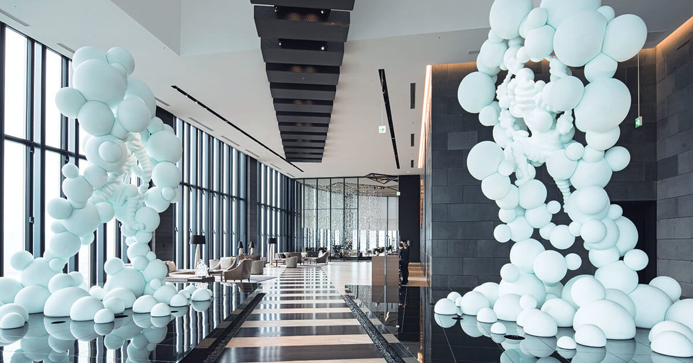
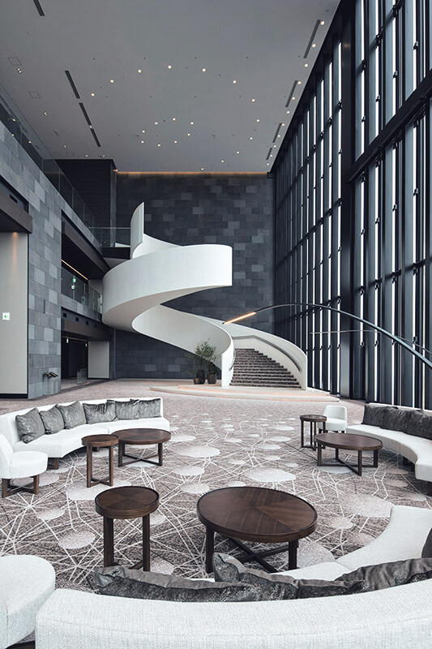
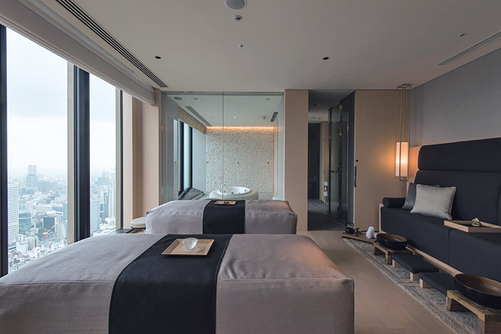
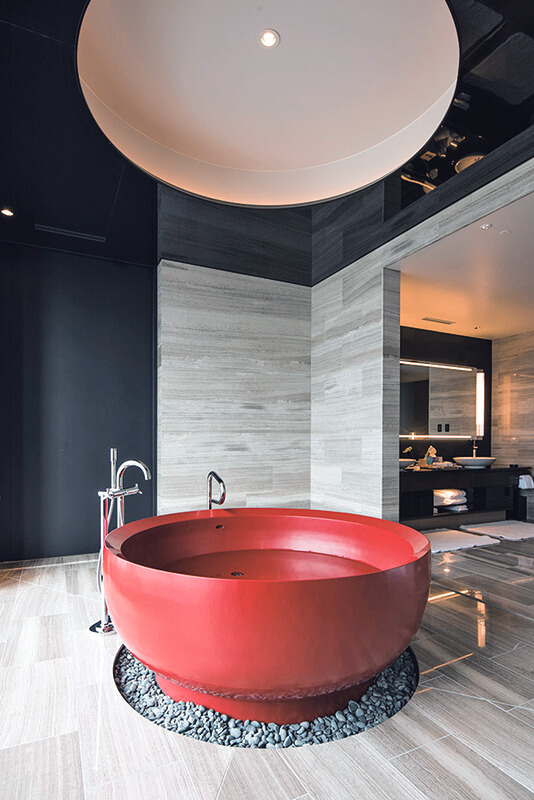
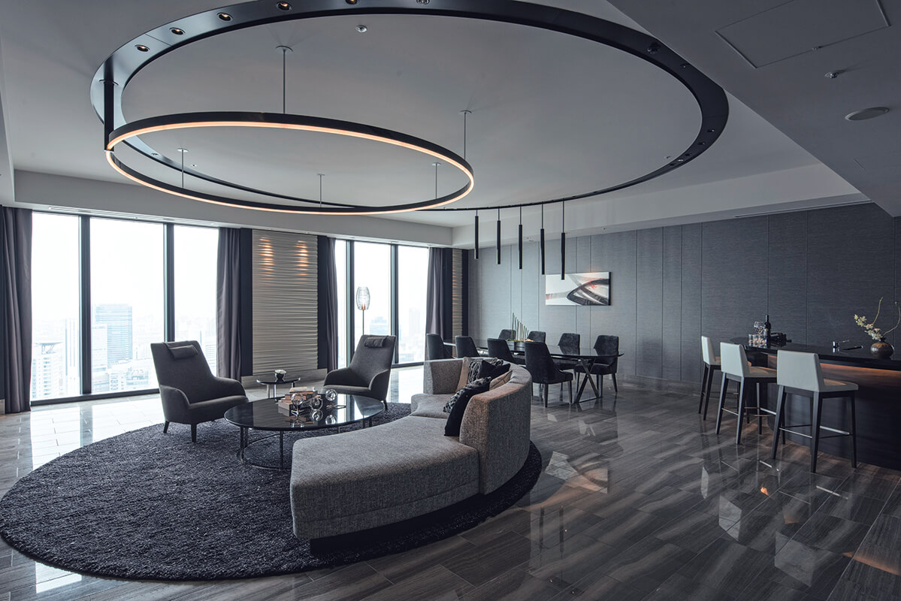
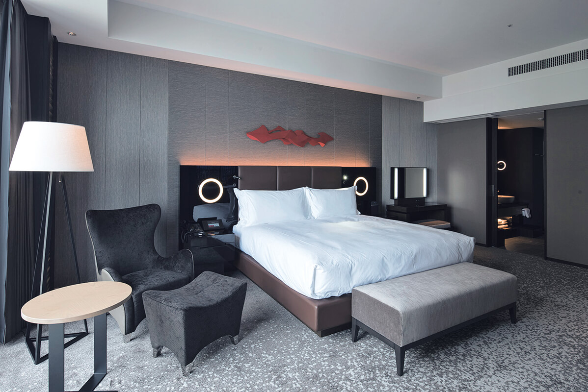

Префектура Осака · Наканосима · отель
«Конрад Осака»: отель на высоте 200 метров, где искусство встречает с порога

Отель «Конрад Осака» (Conrad Osaka) занимает верхние этажи небоскрёба на острове Наканосима, на высоте 200 метров. Из его огромных окон видно весь город, от кварталов высоток до линии гор на горизонте.
Искусство
Путешествие начинается на первом этаже
Наканосима это узкий остров между двумя реками в центре Осаки, деловой квартал города, который недаром называют «городом на воде». Небоскрёб стоит прямо между руслами, а отель «Конрад Осака» занимает его самые верхние этажи. Это стильный современный отель, и искусство здесь встречается на каждом шагу.
Первая встреча ждёт ещё внизу. У входа на первом этаже гость невольно замедляет шаг: здесь светится видеоинсталляция «Phenomenon» Такахиро Мацуо, художника, известного интерактивными работами со светом, а рядом переливается «Prism Chandelier», большая люстра из призматических элементов, сложенных как геометрическое оригами. Так начинается путешествие по искусству, которое продолжается по всему отелю. Всего здесь 389 произведений, и они есть даже в номерах.
Отсюда лифт поднимает прямо в лобби на 40-м этаже. Двери открываются, и перед вами стеклянный атриум высотой в несколько этажей с панорамой Осаки.

Насмотревшись на город внизу, стоит обернуться к входу в лобби. По обе стороны от него стоят белоснежные скульптуры «Fu/Rai» высотой 5 метров. В первый миг они ошеломляют, а потом понимаешь, что в них действительно живёт что-то божественное. Скульптуры из микробусин создал Кохэй Нава, скульптор из Киото, который работает в Японии и за рубежом. Их мотив взят у Фудзина и Райдзина, богов ветра и грома. В зависимости от того, как падает свет, у скульптур меняется выражение, и именно «Fu/Rai» стали символом отеля.
Внутри просторного лобби светится ещё одна работа Такахиро Мацуо, «AURA». Тонкие призмы занавесом отделяют лаунж и передают сияние воздуха: облака, ветер, алмазную пыль. Когда сквозь них проходит солнце, появляются радуги.
Номера
Адрес в небе
Девиз отеля «Адрес в небе на высоте 200 метров», а его идея звучит как «Ваш адрес в небе: сквозь облака». Четыре ресторана, бар и все 164 номера смотрят на панораму Осаки, которая открывается на юг, север и запад. Кроме того, в отеле есть спа, бассейн, фитнес-зал, лаунж для гостей клубных этажей и часовня.

Номер высшей категории, «Конрад сьют», в отеле один, и его площадь 220 квадратных метров. В гостиной есть барная стойка, обеденный стол и мини-кухня. Но главное здесь в ванной комнате на 39-м этаже: круглая ванна, покрытая алым лаком.

Цены в 2019 году начинались от 50 000 иен за номер без налога и сервисного сбора. Отель, целиком построенный на современном и смелом искусстве, выделяется среди гостиниц шумной Осаки как отель нового поколения.


«Конрад Осака»
- Адрес
- префектура Осака, Осака, район Кита, Наканосима, 3-2-4
- Телефон
- +81 6-6222-0111
- Номера
- 164
- Цены / Вход
- от 50 000 иен за номер без налога и сервисного сбора
- Заезд / выезд
- 15:00 / 12:00
- Как добраться
- прямой выход со станции Хигобаси (линия метро Ёцубаси) и станции Ватанабэбаси (линия Кэйхан Наканосима); около 5 минут на машине от станции JR Осака
- Сайт
- conradosaka.jp
Фото: Ацуси Ямахира.